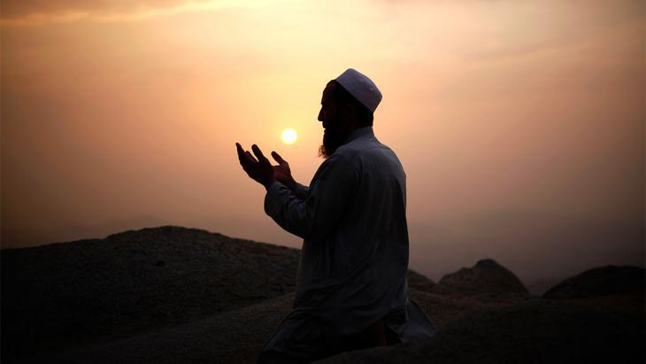

New Articles This Week
Chapter 95, Al-Bavvinah (The Clear Evidence) (Published on 20 Jan 2016)
Description :A short This chapter begins describing the worldly possessions that distract us from obedience to God and ends by telling us what the destiny will be for those who do not take heed.
Excerpt : This is one of the short chapters found at the end of the Quran. It is generally accepted that these chapters, which were revealed in Mecca, contain stern, sometimes violent, warnings with an emphasis on belief in God and the Day of Judgement, and descriptions of Paradise and Hell. They were revealed during the first years of the mission of Prophet Muhammad, may the mercy and blessings of God be upon him, when ignorance and polytheism were at their peak. The eight short verses of chapter 102 follow on from the previous chapter 101 The Crashing Blow, in which were told that certain people will find there eternal abode in the fires of Hell. In this chapter we are told the reason why people will have such a terrifying end and God offers them advice. This chapter takes its name from the first verse.
New Videos This Week
ISLAM - The True Religion Of God (Allah) (Published on Feb 18, 2013)
Islam began in Arabia and was revealed to humanity by the Prophet Muhammad. Those who follow Islam are called Muslims. Muslims believe that there is only one God. The Arabic word for God is Allah.
How Prophet PBUH forgave people (Published on Dec 23, 2015)
Islam began in Arabia and was revealed to humanity by the Prophet Muhammad. Those who follow Islam are called Muslims. Muslims believe that there is only one God. The Arabic word for God is Allah.
Featured Articles This Week
The Quran on the Origin of the Universe (Published on 02 Mar 2006)
Excerpt: The science of modern cosmology, observational and theoretical, clearly indicates that, at one point in time, the whole universe was nothing but a cloud of ‘smoke’ (i.e. an opaque highly dense and hot gaseous composition). This is one of the undisputed principles of standard modern cosmology. Scientists now can observe new stars forming out of the remnants of that ‘smoke’ (see figures 1 and 2)